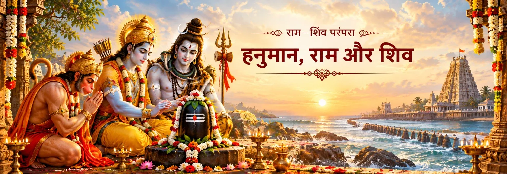

हनुमान कैलास भेजे जाते हैं
स्कंद पुराण के सेतु-माहात्म्य में राम हनुमान से कैलास से शिवलिंग लाने को कहते हैं। हनुमान तुरंत यह कार्य स्वीकार करते हैं, इसलिए यह यात्रा किसी व्यक्तिगत इच्छा की नहीं, बल्कि सेवा की यात्रा बन जाती है।

राम–शिव परंपरा में हनुमान
राम–शिव परंपरा में हनुमान एक अद्भुत संगम-बिंदु पर दिखाई देते हैं। वे सबसे पहले राम के सेवक और भक्त हैं, जबकि स्कंद पुराण की रामेश्वरम् परंपरा उन्हें शिव-आराधना के साथ भी सीधे जोड़ती है। राम हनुमान को कैलास से लिंग लाने भेजते हैं, हनुमान शिव की आराधना से वह लिंग प्राप्त करते हैं और अंततः वह लिंग रामनाथ की परंपरा के समीप प्रतिष्ठित होता है।
यह कथा इसलिए विशेष अर्थपूर्ण है क्योंकि ग्रंथ हनुमान को केवल एक ही भूमिका में सीमित नहीं करते। वे दूत, योद्धा, सेवक, उपासक और शिक्षक—इन सभी रूपों में दिखाई देते हैं। स्कंद पुराण का लिंग-प्रसंग उनके माध्यम से आत्मतत्त्व की दार्शनिक शिक्षा की ओर भी मुड़ता है, जबकि रामायण और रामचरितमानस अलग-अलग ग्रंथीय रूपों में उनकी राम-भक्ति को प्रमुखता देते हैं।
पवित्र लिंग की यात्रा
सेतु-माहात्म्य रामेश्वरम् की पवित्र परंपरा में इस प्रसंग को एक विशिष्ट स्थान देता है।
स्कंद पुराण के सेतु-माहात्म्य में राम हनुमान से कैलास से शिवलिंग लाने को कहते हैं। हनुमान तुरंत यह कार्य स्वीकार करते हैं, इसलिए यह यात्रा किसी व्यक्तिगत इच्छा की नहीं, बल्कि सेवा की यात्रा बन जाती है।
स्कंद पुराण में हनुमान केवल लिंग लेकर लौटते हुए नहीं दिखाए गए हैं। वे तप द्वारा शिव को प्रसन्न करते हैं और लिंग प्राप्त करके शीघ्र राम के पास लौटते हैं। इस प्रकार प्रसंग राम की सेवा को शिव के प्रति प्रत्यक्ष श्रद्धा से जोड़ देता है।
जब हनुमान लौटते हैं, तो वे देखते हैं कि शुभ मुहूर्त निकलने से पहले राम सीता द्वारा निर्मित बालुकामय लिंग की पूजा आरंभ कर चुके हैं। कथा में हनुमान की निराशा के बाद राम दोनों कार्यों के पवित्र उद्देश्य को समझाते हैं।
राम हनुमान से कहते हैं कि उनके द्वारा लाया गया लिंग प्रतिष्ठित होकर हनुमान के नाम से प्रसिद्ध हो। अध्याय 45 में यह भी कहा गया है कि राम द्वारा प्रतिष्ठित लिंग के दर्शन हनुमान द्वारा प्रतिष्ठित लिंग के बाद किए जाएँ। इस प्रकार हनुमान की सेवा को व्यर्थ नहीं, बल्कि साझा पवित्र स्मृति का हिस्सा बनाया जाता है।
हनुमान और राम
व्यापक रामायण परंपरा में हनुमान की पहचान राम की सेवा के माध्यम से होती है। वाल्मीकि रामायण के सुंदरकाण्ड में हनुमान समुद्र पार करते हैं, लंका में सीता की खोज करते हैं, राम के दूत के रूप में उनसे संवाद करते हैं और उनका संदेश लेकर लौटते हैं। इन प्रसंगों में उनकी भक्ति कर्म, साहस और अनुशासित सेवा के माध्यम से प्रकट होती है।
रामचरितमानस इस भक्तिपूर्ण चित्र को और विकसित करता है। सुंदरकाण्ड में बार-बार राम को हनुमान के हृदय में स्थित और उनकी सेवा को निःस्वार्थ रूप में प्रस्तुत किया गया है। आगे एक संवाद में हनुमान सांसारिक पुरस्कार के बजाय राम की भक्ति माँगते हैं, और पाठ में शिव पार्वती को उस संवाद का महत्व बताते हैं। राम–शिव परंपरा की बाद की भक्तिधारा को समझने के लिए यह एक महत्वपूर्ण स्तर है।
सावधानी से पढ़ी जाने वाली परंपरा
हनुमान–राम–शिव संबंध को इस तरह प्रस्तुत नहीं करना चाहिए मानो इसके सभी प्रसंग एक ही ग्रंथ से आते हों। हनुमान की राम-केंद्रित सेवा रामायण परंपरा में केंद्रीय है। कैलास से लिंग लाने, शिव की आराधना करने, हनुमदीश्वर नाम से लिंग की प्रतिष्ठा और राम के साथ दार्शनिक संवाद जैसे विशिष्ट प्रसंग स्कंद पुराण के सेतु-माहात्म्य में प्रमुख रूप से सुरक्षित हैं।
यह भेद कथा को और समृद्ध बनाता है। इससे पाठक समझ सकता है कि रामेश्वरम् के आसपास महाकाव्य-कथा, पौराणिक तीर्थ-भूगोल और बाद की भक्तिपरक व्याख्याएँ कैसे एक-दूसरे से मिलती हैं, बिना उन्हें एक ही अविभाजित विवरण मानने के।
भक्तिपरक चिंतन
हनुमान कर्तव्य और भक्ति को अलग नहीं करते। राम की आज्ञा से मिला कार्य एक पवित्र यात्रा बन जाता है और वही सेवा आराधना का रूप ले लेती है।
लिंग-प्रसंग में हनुमान की निराशा याद दिलाती है कि सच्ची सेवा के परिणाम हमेशा हमारी अपेक्षा के अनुसार नहीं आते। गहरी भक्ति तब परिपक्व होती है जब अत्यंत प्रयास के बाद भी भक्त विनम्रता में लौट सके।
स्कंद पुराण हनुमान की भावनात्मक पीड़ा से राम की आत्मा, धर्म और संयमित जीवन की शिक्षा की ओर बढ़ता है। इसलिए भक्ति के साथ चिंतन, संयम और आत्मज्ञान भी जुड़े हुए हैं।
रामेश्वरम् की परंपरा राम, सीता, हनुमान और शिव को एक ही पवित्र परिदृश्य में रखती है। भक्त के लिए यह परिदृश्य सेवा, श्रद्धा और उत्तरदायित्व के माध्यम से व्यक्त प्रेम पर ध्यान करने का अवसर बन सकता है।
भक्त के लिए
राम परंपरा में हनुमान की असाधारण शक्ति को बार-बार राम के स्मरण और पूर्ण समर्पित सेवा से जोड़ा जाता है। रामेश्वरम् की परंपरा में वही सेवक आवश्यकता पड़ने पर शिव की आराधना भी करता है। यह संयुक्त स्मृति भक्त को शक्ति को केवल शारीरिक सामर्थ्य नहीं, बल्कि धर्म की सेवा में लगी अनुशासित भक्ति के रूप में देखने का अवसर देती है।
ग्रंथीय संदर्भ
इस पृष्ठ पर प्रयुक्त रामेश्वरम् के लिंग-प्रसंग का मुख्य आधार स्कंद पुराण का सेतु-माहात्म्य है, विशेषकर अध्याय 44–46। अध्याय 45 में कैलास से लिंग लेकर लौटे हनुमान और राम की व्याख्या का वर्णन है; अध्याय 46 में राम द्वारा हनुमान की प्रशंसा, दार्शनिक शिक्षा और हनुमदीश्वर की स्थापना का प्रसंग आगे बढ़ता है।
स्कंद पुराण — अध्याय 44: रामनाथ लिंग की स्थापना · अध्याय 45: राम का दर्शन-विषयक संवाद · अध्याय 46: रामनाथ की स्थापना का कारण · वाल्मीकि रामायण — सुंदरकाण्ड
भक्तों के सामान्य प्रश्न
स्कंद पुराण के सेतु-माहात्म्य में राम हनुमान से रामेश्वरम् की पवित्र स्थापना के लिए कैलास से शिवलिंग लाने को कहते हैं।
हाँ। अध्याय 45 में कहा गया है कि कैलास पर लिंग प्राप्त करने से पहले हनुमान ने तप द्वारा शिव को प्रसन्न किया।
स्कंद पुराण की कथा में राम हनुमान को उनके द्वारा लाए गए लिंग की स्थापना करने को कहते हैं और बताते हैं कि वह हनुमान के नाम से हनुमदीश्वर के रूप में प्रसिद्ध हो।
नहीं। कैलास से लिंग लाने का विशिष्ट प्रसंग स्कंद पुराण के सेतु-माहात्म्य में प्रमुख रूप से मिलता है। इसके विपरीत वाल्मीकि रामायण का सुंदरकाण्ड मुख्य रूप से राम के लिए हनुमान की यात्रा और सीता की खोज को सुरक्षित रखता है। इसलिए अलग-अलग ग्रंथ व्यापक पवित्र परंपरा की अलग-अलग परतें सुरक्षित रखते हैं।